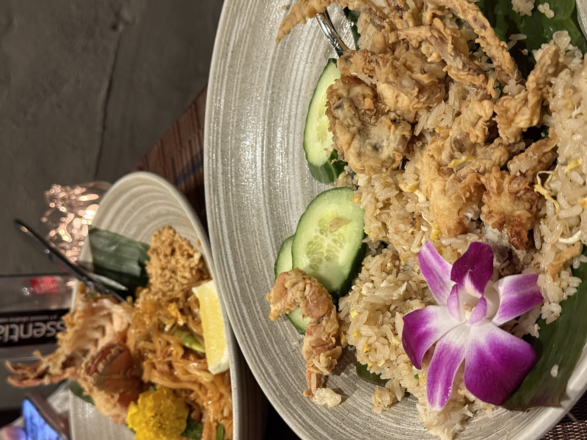

Sichuan flavors, hotpot, and bold spice done right.
Lunar
12 E 37th St, New York, NY 10016
Authentic Sichuan flavors with creative twists. The crispy fried tangyuan
(glutinous rice balls) is a surprise hit — crunchy outside, satisfying, and
seriously addictive.
Style: Sichuan + innovative dishes
Must-try: crispy fried tangyuan
Chongqing Lao Zao
37-04 Prince St, Flushing, NY 11354
A truly authentic Chongqing hotpot experience. Ingredients are fresh and
feel like they’re sourced the same day. The spicy “mala” xiao junggan
left a strong impression — bold, punchy, and unforgettable.
Sweet-sour sauces, rich curry, and street-style bites.
Pranakhon
88 University Pl, New York, NY 10003
A Lisa-recommended spot that totally makes sense once you taste it.
The sweet-and-sour sauce pairs beautifully with a rich curry and seafood —
it instantly boosts your appetite.
Known for: celebrity recommendation
Flavor: sweet-sour + rich curry + seafood

Sabai Thai
432 Park Ave S, New York, NY 10016
I picked this place near Koreatown just for convenience, but it ended up
being a great surprise. The Thai snacks and BBQ are excellent, and the
soft-shell crab is especially impressive — crispy outside, tender inside.
Top-tier KBBQ, generous banchan, and strong sauces.
Antoya Korean BBQ
37 W 32nd St, New York, NY 10001
One of the best meat quality experiences in NYC. The side dishes are plentiful,
the service is genuinely great, and if your meat isn’t grilled well, they’ll
replace it and re-grill it for you.
Best for: top-tier meat + great service
Perk: will replace meat if needed
Jungro BBQ
39 W 32nd St 1st Fl, New York, NY 10001
Rich banchan options and sauces that feel unique to the spot. The grilled pork
belly is the kind of thing you keep thinking about after you leave — simple,
satisfying, and hard to forget.